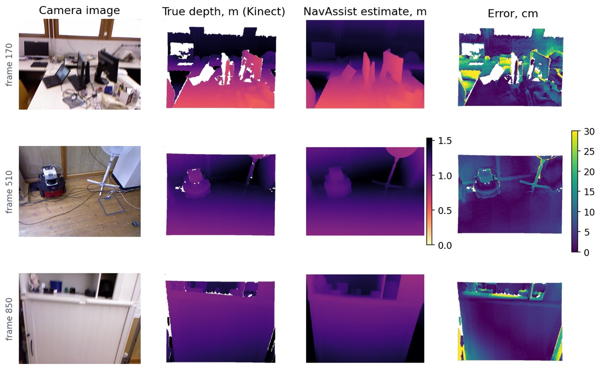

I'm an MS Computer Science student at Northeastern University in Silicon Valley. Most of what I build is for people who are blind or have low vision, and most of it runs on the phone itself.
My main project is NavAssist, an iPhone app that guides blind users around buildings by voice. The hard part was sensing obstacles on iPhones without a LiDAR sensor. I solved it by converting a depth model's output to real distances every frame, which brought the median error down from 26 cm to 6 cm.
Before Northeastern I interned at Tech Mahindra, building an NLP system that matches resumes to jobs and checking it for bias, and at Virtusa, building an accessible shopping app. I also co-wrote an IEEE paper on recommendation systems.
I care about evaluation: every project below is tested in CI and measured on data it wasn't tuned on.
News
Trained a door, door-handle and stairs detector for NavAssist. It finds stairs in 79% of test photos, vs 47% for Apple's built-in classifier.
Ported NavAssist's navigation core to Kotlin for Android, with 79 tests.
Started my MS in Computer Science at Northeastern University, Silicon Valley.
Joined Tech Mahindra as an engineer intern, working on NLP for resume–job matching.
Our paper on collaborative filtering was published at IEEE INCSST 2025.
Voice-first indoor navigation for blind and low-vision people on iPhone and iPad. Walk through a building once and say "save this place as kitchen". Later, say "take me to kitchen" and it guides you back with spoken directions and vibrations. It reads signs and warns about obstacles, doors and stairs.
26 → 6 cmmedian depth error on iPhones without LiDAR
0.89–0.99obstacle-warning F1 per zone, vs 0.53–0.61 before
79% vs 47%stairs found by my detector vs Apple's classifier
83 + 79tests for the Swift core and its Kotlin port, in CI

Camera image, true depth, NavAssist's estimate and the error, on the TUM RGB-D benchmark.
Catches made-up citations, like the ones chatbots invent. It checks DOIs against Crossref, DataCite and arXiv, compares title, year and author, and falls back to title search. Team project; I was the AI/ML lead.
91.3% F1 with 0 false positives on a held-out benchmark, up from 71.9%.
A support chatbot that answers from a store's policy documents with a local LLM. Each sentence is checked against its source and cited, and it declines when the documents don't cover the question.
82.7% correct on 98 held-out questions, vs 44.9% for FAQ matching.
A shopping app designed for people with visual, cognitive and motor disabilities: voice ordering, screen reading, colour help for colour-blind shoppers and app-wide accessibility settings. Built at Virtusa.